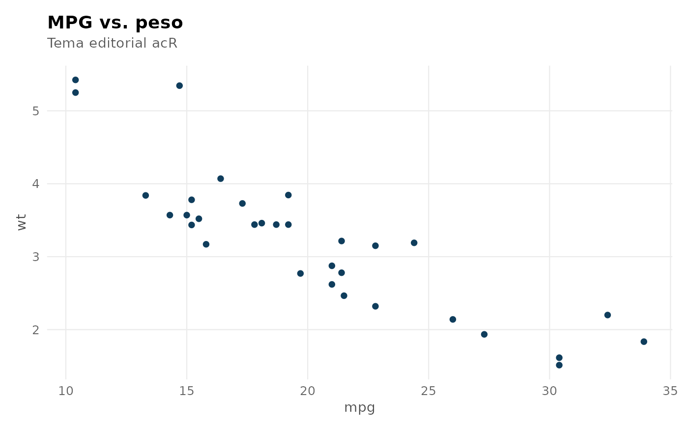

theme_ac() retorna um tema ggplot2 minimalista e consistente, usado
por todos os ac_plot_*() do pacote. Deriva de ggplot2::theme_minimal()
com ajustes editoriais: tipografia mais compacta, gridlines suaves,
títulos em negrito com espaçamento negativo (visual editorial).
Também expõe ac_palette() para uma paleta categórica coerente com o
tema (compatível com acessibilidade AA).
Value
Um objeto ggplot2::theme.
Examples
if (requireNamespace("ggplot2", quietly = TRUE)) {
ggplot2::ggplot(mtcars, ggplot2::aes(mpg, wt)) +
ggplot2::geom_point(color = ac_palette()[1]) +
ggplot2::labs(title = "MPG vs. peso", subtitle = "Tema editorial acR") +
theme_ac()
}
